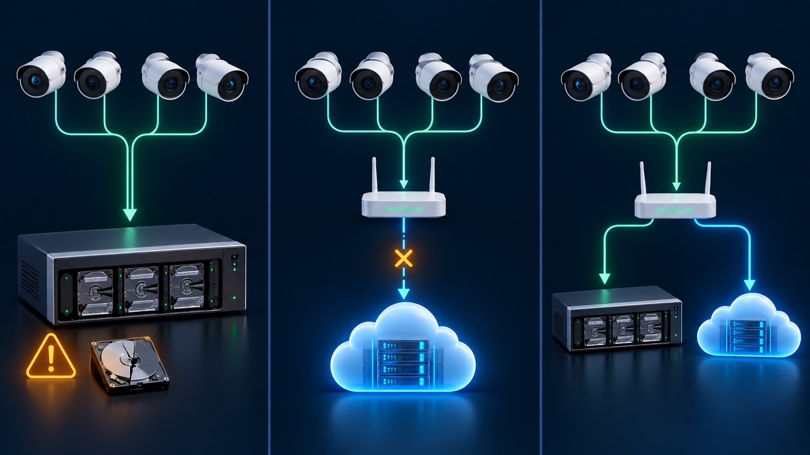

Choose local storage when continuous recording, predictable on-site capacity and operation during an internet outage are the main goals. Choose cloud storage when an off-site copy and simple multi-location access matter more. A hybrid design can combine local continuous video with off-site copies of selected incidents, but only if the cameras, recorder, network and archive workflow are configured and tested together.
Cameras send video to a recorder at the property. An NVR usually records IP-camera streams; a DVR records compatible analog-camera feeds. The recorder controls schedules, retention and playback, and its storage capacity must be planned for camera count, bitrate, recording mode and desired history.
Some cameras can record to a compatible SD card or other edge storage. Axis explains that this can let local recording continue while internet access is unavailable. The card's capacity, endurance and compatibility still matter, and physical access to the camera may expose or remove the storage.
Some systems can archive recordings or events to a NAS. This creates another local destination, but it is not automatically an off-site backup. Confirm whether the NAS receives continuous video, selected events or scheduled exports, and whether it is protected from the same theft, fire, power and network risks as the recorder.
Cloud recording sends video or selected clips to infrastructure outside the property. That can protect an off-site copy when the on-site recorder is stolen or damaged. It also introduces dependencies: camera or gateway power, a working network path, sufficient upload capacity, an active service and secure account access.
Cloud products vary widely. Some upload every event, some record continuously, some retain only short clips, and some use the cloud mainly for remote access while the video remains local. Read the product's recording and retention documentation instead of assuming that “cloud-enabled” means all footage is stored off-site.
A local NVR, DVR or camera card may continue recording when the internet fails if the cameras, local network and storage remain powered. Cloud uploads and remote viewing may stop until connectivity returns. Some products can backfill recordings after reconnection; others cannot, so verify the exact model and service.
Neither local nor cloud storage helps if every camera loses power. The recording path needs suitable backup power. Our guide to security cameras during a power outage explains which components a UPS must protect.
Video stored only on the recorder may be lost with the device. An off-site archive or exported incident copy can reduce that risk. Hiding a recorder is not a substitute for account security, restricted physical access and a tested export process.
Cloud convenience makes account security part of the evidence chain. Use unique credentials, multifactor authentication where available, named user accounts and regular access review. Apply the same discipline to remote-access accounts for local recorders. See our camera security checklist.
Local storage can fail even when live view still works. Check recorder and card health, confirm that old video is being overwritten as intended, and perform playback tests. RAID can improve availability in supported NVRs, but it does not replace a separate copy of footage that must be preserved.
The storage location does not tell you what is being captured. Confirm whether each camera records continuously, on a schedule, on detection or only when manually triggered. Event-only recording uses less capacity but depends on detection settings and may omit activity that did not trigger an event. Continuous recording gives a fuller timeline but requires more storage and, in the cloud, more upload capacity.
Ubiquiti's current Protect documentation illustrates this distinction: recordings can remain local by default, while clips or detections can be exported or archived to a cloud service or NAS. Other platforms use different workflows, so test the one you actually buy.
Do not choose storage from a generic promise such as “30 days.” Retention depends on camera count, resolution, frame rate, codec, bitrate, scene activity, recording schedule and usable storage. Cloud plans may also limit clip duration, event history or camera count. Use our footage-retention planning guide to calculate the requirement from the evidence you need.
A balanced design often records the full timeline locally and sends selected incident clips or critical-camera events to a separate destination. This reduces dependence on continuous upload while keeping an off-site copy of important evidence. It is still necessary to define which events are archived, how soon they upload, how long they remain available and who checks that the archive is working.
CISA's general backup guidance uses the 3-2-1 principle for important data: keep multiple copies on different media with one copy off-site. A camera system does not need to copy every frame three times, but the principle is useful when preserving an incident clip that cannot be recreated.
Tech Secure 360 can design and test local, cloud or hybrid recording for homes and businesses across Greater Los Angeles. The recommendation should match the footage, outage behavior, access controls and retention you actually need.

Plan retention from recording demand, incident discovery and available storage.

Learn which parts of the recording path need backup power.

Protect accounts, remote access, firmware and the network behind the system.
Tell us about your place and we'll respond within one business day with a tailored plan and pricing. Or call us right now.
Your request is in. A Tech Secure 360 specialist will reach out within one business day. Need help now? Call (747) 336-2737.